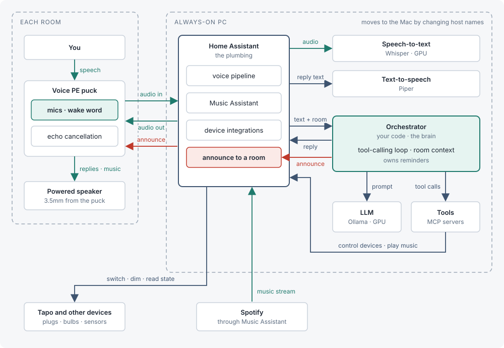
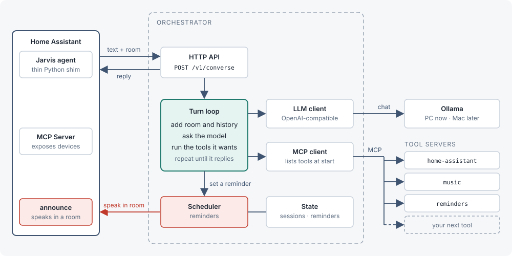

Introduction #
Talk to a puck in any room; a local LLM on your own PC answers, and can act.
Design only. Nothing described here is built yet. This site shows how the system is meant to fit together; the spec has the detail.
Jarvis is a voice assistant that runs entirely on your home network. A small microphone puck sits in each room. When it hears the wake word it streams what you say to an always-on PC, which transcribes it, hands the text to a local LLM that can call tools, and speaks the reply back in the room you asked from.
Most of it is existing open-source software, configured. The part this project builds is the orchestrator, the brain that runs the LLM and decides which tools to call, and the tool servers that give it things to do.
What it does
| You say | What handles it |
|---|---|
| "How far away is the moon?" | The LLM, from its own knowledge. |
| "Set a timer for ten minutes." | Home Assistant, without involving the LLM. The puck rings. |
| "Turn off the lamp." | The LLM calls a device tool. "The lamp" means the one in your room. |
| "Play some jazz." | The LLM calls the music tool. Spotify plays through that room's speaker. |
| "Remind me at six to ring Mum." | The LLM calls the reminders tool. At six, Jarvis speaks up on its own. |
wake word on the puck
speech-to-text Whisper, on the PC
thinking orchestrator + LLM
doing tool servers (MCP)
text-to-speech Piper, on the PC
playback the puck, in your roomAudio leaves the puck only after the wake word matches. Nothing leaves the house.

How it works #
One request, from your voice to the answer.
Every voice assistant is the same chain of six steps. What differs is where each step runs. Here, only the first and last happen in the room.
- Wake word. The puck listens continuously, on the device, for one phrase. Until it matches, no audio goes anywhere.
- Speech-to-text. The puck streams audio to Home Assistant, which passes it to Whisper and gets text back.
- Local shortcuts. Home Assistant checks the text against its built-in commands. Timers and other fixed phrases are handled here, instantly.
- Thinking. Everything else goes to the orchestrator, along with which room it came from. The orchestrator asks the LLM, runs any tools the LLM wants, and repeats until there is a reply.
- Text-to-speech. Home Assistant sends the reply text to Piper and gets audio back.
- Playback. The audio plays on the puck that heard the request.
Why the room travels with the request
The puck that heard you identifies the room, and that fact is attached to the request by Home Assistant, not guessed by the LLM. It is what makes "turn off the lamp" and "play some jazz" mean here.
end of speech detected 0.5 - 0.7 s
speech-to-text 0.3 s
LLM, first sentence 0.5 - 0.8 s
text-to-speech 0.2 s
-----------
first spoken word under 2 sTargets to measure against, not measurements. Every turn will log its per-stage timings from the first day.
sequenceDiagram
autonumber
participant U as You
participant P as Puck
participant HA as Home Assistant
participant W as Whisper
participant O as Orchestrator
participant L as LLM
participant T as Piper
U->>P: "Jarvis, how far away is the moon?"
Note over P: wake word matched on the device
P->>HA: audio stream
HA->>W: audio
W-->>HA: "how far away is the moon"
Note over HA: no built-in command matches
HA->>O: text, room, session
O->>L: conversation + tool list
L-->>O: answer
O-->>HA: reply text
HA->>T: reply text
T-->>HA: audio
HA-->>P: audio
P-->>U: spoken answer
Hardware #
One puck and one speaker per room. No Raspberry Pi anywhere.
Hearing a voice from across a room is the hard part of a voice assistant, harder than the LLM. An Echo manages it with three things, and the puck has all three:
- More than one microphone. Comparing when a sound reaches each one lets the device favour your voice over noise from elsewhere.
- Echo cancellation. The device knows exactly what its own speaker is playing and subtracts it from what the microphones hear. This is how it hears you over its own music.
- A dedicated audio chip that does this continuously, along with the wake word.
Home Assistant Voice PE
An open-source equivalent of an Echo Dot: two microphones, an audio-processing chip, on-device wake word, a small speaker, a 3.5mm output, a physical mute switch and Wi-Fi. It is built to talk to Home Assistant, which is why Home Assistant sits in the middle of this design.
Why the speaker plugs into the puck
Echo cancellation only works on audio the puck itself is playing. A separate Wi-Fi speaker would sound better, but the puck could not subtract its sound, and the wake word would struggle whenever music was loud. A powered speaker on the puck's 3.5mm output keeps the music inside what the puck can cancel.
| Per room | Purpose |
|---|---|
| Home Assistant Voice PE | Microphones, wake word, echo cancellation. |
| Powered speaker with a 3.5mm input | Replies and music at a quality the puck's own speaker cannot manage. |
| USB power | For the puck. |
The store offers add-ons with the puck: the Home Assistant Green hub and Zigbee or Z-Wave radios. None are needed. The PC runs Home Assistant, and Tapo devices are Wi-Fi.
The orchestrator #
The one service this project writes from scratch.
Home Assistant already knows how to manage pucks, move audio around and switch devices. What it does not have is your assistant's behaviour: how it talks, what it remembers, which tools it has. That lives in the orchestrator.
The connection between the two is deliberately narrow. A thin integration inside Home Assistant, the Jarvis agent, does one thing: when a transcribed request arrives that Home Assistant did not handle itself, it posts the text to the orchestrator and returns whatever comes back.
The turn loop
- Add what the LLM needs to know: the room, the time, the recent conversation.
- Ask the LLM, offering it the list of tools.
- If it asks for a tool, run it and give it the result, then ask again.
- When it produces words instead of a tool call, that is the reply.
Swapping the model
The orchestrator talks to the LLM through the OpenAI-compatible API at an address from configuration. Ollama provides that API on both the PC and the Mac, so moving the model is a one-line change, and nothing in the orchestrator may rely on behaviour specific to one server.
{
"text": "turn off the lamp",
"session_id": "01JCX4...",
"satellite_id": "assist_satellite.lounge",
"room": "lounge",
"language": "en"
}{
"reply": "Done.",
"session_id": "01JCX4...",
"continue_listening": false
}Proposed contract. continue_listening reopens the microphone when Jarvis has just asked you something.

home-assistant tool server is provided by Home Assistant's own MCP Server integration; the others are part of this project.Tools #
A new capability is a new tool server, not a change to the brain.
Each thing Jarvis can do beyond talking is a tool, and tools are grouped into small servers that speak MCP, a standard protocol for offering tools to an LLM. When the orchestrator starts it connects to every server in its configuration and asks what tools each one has. Those descriptions are what the LLM sees.
| Server | What it offers | Where it comes from |
|---|---|---|
home-assistant | Switch, dim, read the state of devices. | Home Assistant's MCP Server integration. |
music | Play, pause, skip, volume, per room. | This project; calls Music Assistant. |
reminders | Create, list and cancel reminders. | This project; uses the orchestrator's scheduler. |
Rules a tool server follows
- One capability per server, runnable and testable on its own.
- Descriptions are written for the LLM: short, concrete, one job per tool.
- A tool that acts in a room takes a
roomargument, and the orchestrator fills it in. - A tool returns a short result to be turned into speech, never audio.
- A failing tool says why, so Jarvis can tell you.
{
"servers": {
"home-assistant": {
"url": "http://homeassistant.local:8123/mcp_server/sse"
},
"music": {
"command": "jarvis-tool-music"
},
"reminders": {
"command": "jarvis-tool-reminders"
}
}
}Illustrative. Adding a capability means adding an entry here and restarting the orchestrator.
sequenceDiagram
autonumber
participant HA as Home Assistant
participant O as Orchestrator
participant L as LLM
participant T as home-assistant tools
HA->>O: "turn off the lamp", room = lounge
O->>L: conversation + tool list
L-->>O: call turn_off(lamp)
Note over O: fills in room = lounge
O->>T: turn_off(lamp, lounge)
T->>HA: switch off light.lounge_lamp
HA-->>T: off
T-->>O: "lounge lamp is off"
O->>L: tool result
L-->>O: "Done."
O-->>HA: reply text
Timers and reminders #
Two ways for sound to come out of a puck that nobody just spoke to.
Timers
Home Assistant recognises timer phrases itself, before the orchestrator sees them. The timer runs on the puck that heard you and rings there. It is fast, needs no LLM and needs no code from this project.
Reminders
A reminder carries words ("ring Mum") and has to survive restarts, so the orchestrator owns it. When it comes due, the orchestrator asks Home Assistant to announce the text on a particular puck. That announce action is the only way the server starts speaking by itself, and anything else that needs to interrupt you later will use the same path.
sequenceDiagram
participant U as You
participant P as Puck
participant HA as Home Assistant
participant O as Orchestrator
rect rgba(31, 122, 109, 0.10)
Note over U,HA: A timer never reaches the orchestrator
U->>P: "Jarvis, set a timer for ten minutes"
P->>HA: audio
Note over HA: matches a built-in command
HA-->>P: "Timer set", timer starts on the puck
Note over P: ten minutes pass
P-->>U: rings
end
rect rgba(192, 57, 43, 0.10)
Note over U,O: A reminder is pushed by the orchestrator
Note over O: 6:00 pm, reminder due
O->>HA: announce "Time to ring Mum" in the lounge
HA->>P: synthesised audio
P-->>U: "Time to ring Mum"
end
Music #
The LLM chooses what to play. It never touches the audio.
Asking for music is a tool call like any other. The music tool passes the request and the room to Music Assistant, which runs inside Home Assistant, signs in to Spotify, and streams to a player. The player is the puck in your room, and the sound comes out of the powered speaker plugged into it.
Because the puck is the thing playing, its echo cancellation still applies, so "Jarvis, stop" can be heard over the music.
Two parts of this are assumptions until tested with the first puck: that Music Assistant can use the puck as a player, and that the wake word holds up when the external speaker is loud. Both are in Open questions.
sequenceDiagram
autonumber
participant O as Orchestrator
participant M as music tool
participant MA as Music Assistant
participant S as Spotify
participant P as Puck + speaker
Note over O: "play some jazz", room = kitchen
O->>M: play("jazz", kitchen)
M->>MA: play "jazz" on the kitchen player
MA->>S: search, start stream
S-->>MA: audio
MA-->>P: audio
M-->>O: "playing a jazz playlist in the kitchen"
Note over P: later, "Jarvis, stop" is heard over the music
Deployment #
Everything on one always-on PC to begin with, arranged so any part can move.
The server is a PC with an RTX 3080 Ti. Its 12 GB of video memory holds Whisper, Piper and a mid-sized LLM together. Every part is a network service with its own address, so no part assumes another is on the same machine.
| Service | Port | Uses the GPU |
|---|---|---|
| Home Assistant | 8123 | No |
| Whisper | 10300 | Yes |
| Piper | 10200 | No |
| Ollama | 11434 | Yes |
| Orchestrator | 8700 | No |
| Music Assistant | 8095 | No |
Moving to the Mac
- Parts can move one at a time. The LLM on the Mac with speech still on the PC is a valid arrangement.
- Containers on macOS cannot reach the GPU, so Ollama and Whisper run natively there. Everything else can stay in containers.
- The pucks only know Home Assistant's address, so they are unaffected.
HOME_ASSISTANT_URL="http://pc.local:8123"
LLM_BASE_URL="http://pc.local:11434/v1"
LLM_MODEL="to-be-chosen"HOME_ASSISTANT_URL="http://pc.local:8123"
LLM_BASE_URL="http://mac.local:11434/v1"
LLM_MODEL="to-be-chosen"Illustrative. One line changes.
Roadmap #
Each phase ends with something that works and can be lived with.
| Phase | What gets built | Done when |
|---|---|---|
| 0. Bench | Home Assistant, Whisper, Piper and Ollama on the PC, tested from a browser. | A typed and a spoken question both get a spoken answer. |
| 1. One room | One puck on the stock pipeline. | Questions and timers work from across the room. |
| 2. Own brain | The orchestrator, the Jarvis agent, the home-assistant tools. | A device is controlled by voice through the orchestrator, with timings logged. |
| 3. Music | Music Assistant, Spotify, the music tool, a powered speaker. | "Play some jazz" plays in the room and "stop" is heard over it. |
| 4. Whole house | More pucks; reminders and announcements. | A reminder set in one room can be delivered in another. |
| 5. Later | Mac migration, memory across conversations, a push-to-talk phone app. | To be specified. |
Open questions #
Assumptions the design rests on that have not been tested.
- Echo cancellation on the 3.5mm output. Does the puck still hear the wake word with music loud on an external speaker? Test with the first puck before buying more speakers.
- Music Assistant and the puck. Confirm the puck works as a player, including lowering the music while Jarvis speaks.
- Streaming replies. Can the Jarvis agent feed partial text into text-to-speech, or must the reply be complete first? This decides whether long answers can meet the latency target.
- Which model. It has to fit beside Whisper in 12 GB and call tools reliably. That needs a small set of real requests to evaluate against.
- Orchestrator language. The Jarvis agent must be Python. The orchestrator can be anything with an MCP client and an HTTP server.
- Spotify access. Premium is needed for playback control, and Spotify's developer terms have tightened.
- The PC's operating system. Windows with WSL2 or Linux changes how the GPU reaches the containers.
- Knowledge beyond the model. Weather, news and calendar each need a tool. Which come first?